BatBot
Operação Cifrão Global: Desvendando o Coringa Monetário

Python
- ✓ Monitoramento de moedas internacionais
- ✓ Integração direta com API do Banco Central
BACKEND SYSTEMS | PYTHON ARCHITECT
Python
Python
Python
Python